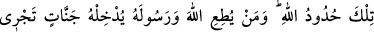
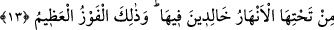
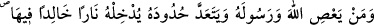
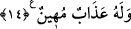
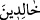
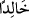

Yâni ölen kimse zikredilen vasiyet ve borcu, mîrasın üçte birini aşmadan, vasiyette
vârislere zarar verme maksadı gütmeden ve ölüm hastalığında asılsız bir borç kabûl
etmemek sûretiyle vârislere zarar getirmeden yapar.
“Bunlar Allah’tan size vasiyettir.” Allah size, değiştirilmesi câiz olmayan bir şey
vasiyet etmektedir. Hz. Peygamber (a.s.) şöyle buyurur: “Kim Allah’ın tahsîs ettiği bir
mîras payını vermezse Allah da onun cennetteki mîrasını vermez.”[222]
“Allah” zarar veren ve vermeyen “her şeyi hakkıyle bilendir, hâlimdir”, cezâ
vermekte acele etmez. Kimse, O’nun mühlet vermesine aldanmasın!
13- Bunlar, Allah’ın (koyduğu) sınırlardır. Kim Allah’a ve Peygamberi’ne itâat
ederse Allah onu, zemîninden ırmaklar akan cennetlere koyacaktır; orada devamlı
kalıcıdırlar; işte büyük kurtuluş budur.
“Bunlar”; yani yetimler, vasiyet ve mîrasla ilgili olarak geride geçen hükümler,
“Allah’ın sınırları”, aşılması câiz olmayan çizilmiş sınırlara benzeyen kanunlarıdır.
“Kim” aralarında burada tafsîlâtı verilen hükümlerin de bulunduğu emir ve yasaklar
konusunda “Allah’a ve Peygamberi’ne itâat ederse Allah onu, zemîninden ırmaklar
akan cennetlere koyacaktır; orada devamlı kalıcıdırlar.” “İşte büyük başarı”,
kıyametteki büyük kurtuluş ve ötesinde hiç bir zafer bulunmayan muzafferiyet “budur”,
bu sevaptır.
14- Kim Allah’a ve Peygamberine karşı isyan eder ve sınırlarını aşarsa Allah onu,
devamlı kalacağı bir ateşe sokar ve onun için alçaltıcı bir azâb vardır.
“Kim” de bu emir ve yasakların bir kısmında bile olsa, “Allah’a ve Peygamberi’ne
karşı isyân eder ve sınırlarını, bütün hükümlerde belirlenmiş bulunan kanunlarını
“aşarsa Allah onu, devamlı kalacağı”, hiç kimsenin dayanamayacağı kadar büyük ve
korkunç “bir ateşe sokar ve onun için alçaltıcı bir azâb vardır.” Yâni, onun için bu
yakıp kavurucu cismânî azâbın dışında künhü bilinmeyen başka bir azâb daha vardır ki
bu, vasfı belirtildiği üzere rûhânî bir azâbtır.
Cenâb-ı Hak süreklilik bildiren kelimeyi cennetlikler için çoğul (
hâlidîn)
olarak getirirken, cehennemlikler için tekil (
hâliden) getirmiştir. Çünkü tek başına